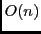
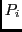
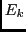

suivant: Bonus, 2 points.
monter: TP : Plus longue
précédent: Question 4. 6 points.
(pour rattraper des points sur votre partiel, si vous avez les 20 points). La méthode d'affichage est en , et
on préférerait une méthode qui prenne un temps proportionnel à la longueur de la séquence.
Dans la méthode naïve, stockez dans un tableau  l'indice de l'élément  précédant
immédiatement  dans la plus longue séquence qui utilise (-1 s'il n'y en a pas de tel ).
Ecrivez une méthode d'affichage (en ordre inverse, si c'est le plus simple) qui utilise . Remarque : est similaire au prédécesseur
du sommet
dans la plus longue séquence qui utilise (-1 s'il n'y en a pas de tel ).
Ecrivez une méthode d'affichage (en ordre inverse, si c'est le plus simple) qui utilise . Remarque : est similaire au prédécesseur
du sommet  dans les méthodes de plus courts chemins.
dans les méthodes de plus courts chemins.
Dominique Michelucci
2012-12-06